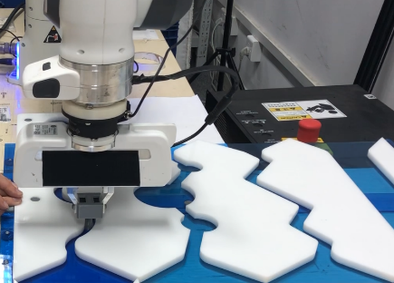
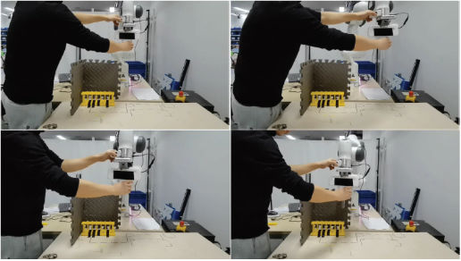

|
Research
Robot compliant control
|
 |
Robotic tasks with rich physical interactions, such as polishing, assembly and human-robot collaborations, propose demands for the robot compliant property to ensure operation safety. However, to provide the desired compliant property for robots, we will face two challenging problems. The first one is that we need to accurately establish robot dynamic models, based on which the compliant control could be designed. Offline identification approaches suffer from the accuracy and generalization limitations, and online learning approaches with real-time constraints will be more suitable. The second one is the contradiction between the robot compliance and the tracking accuracy. A useful way to handle this issue is adapting a strategy to adaptively trade-off the robot compliance and accuracy, such as using variable impedance control.
Z. Jin, A. Liu, W. -A. Zhang and L. Yu, “An Optimal Variable Impedance Control With Consideration of the Stability,” in IEEE Robotics and Automation Letters, vol. 7, no. 2, pp. 1737-1744, April 2022.
Z. Jin, D. Qin, A. Liu, W. -A. Zhang and L. Yu, “ Constrained Variable Impedance Control using Quadratic Programming,” 2022 IEEE International Conference on Robotics and Automation (ICRA), 2022, pp. 1-6.
|
Human-behaviors learning
|
 |
Human-behaviors learning acts as an important role in the human-robot collaboration. It can be used to increase the cognition of robots to humans, and thus increase the collaboration safety, efficiency. Moreover, it can also be directly used for robot imitation learning. Human-behaviors are always encoded by dynamic systems (DSs), and according to the different types of the learned DSs, human-behaviors learning algorithms can be divided into two types. The first type learns non- autonomous DSs (N-ADSs) where behaviors are driven by the time. This type gains high reproduction accuracy with sacrifice of the flexibility. Moreover, it also inherits disadvantages of regression learning, such as the model expressive limitation and demands of manually feature design, etc. Using non-parametric learning approach might solve these issues well. The second type leans autonomous DSs (ADSs), and the stability of the learned ADSs are mostly cared. However, there exists contradictions between the system stability, model accuracy and model generalization capacity. A feasible way to handle these contradictions is learning data-driven Lyapunov functions.
Z. Jin, A. Liu, W. -A. Zhang, L. Yu and C. -Y. Su, “A Learning Based Hierarchical Control Framework for Human-Robot Collaboration,” in IEEE Transactions on Automation Science and Engineering, doi: 10.1109/TASE.2022.3161993.
|
|